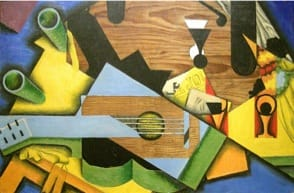

This dogmatic position could not withstand mathematical progress. A major debate took place during the 17th century between the defenders of a rational aesthetic and those whom scientific progress had convinced otherwise.
The latter opinion, more in harmony with a technological society in the making, led to the current definition of the artist. Attached to the emotional and subjective nature of their creation and linking success with the quality of their inspiration, modern artists often regard the idea of rationality in art as a reductive aberration.
That was not what Dürer thought, since he found it deplorable that some fellow-artists, guided by their talent alone, should create works of much poorer quality than those their understanding could have produced by following the rules of the "art of measurement" ( Dürer quotation)
But we should not be misled: that which so frightens some does not correspond so simply to that which so attracts others. The "art of measurement" so dear to the Ancients is alien to this image of a scholastic straitjacket: it is above all a provider of logical frameworks intended to support and give meaning to creative activity. Its practice is therefore more liberating than alienating.

After Still Life with a Guitar by Juan Gris
The Traité de Lutherie gives precise information about that art, destined for those who wish to practice it. Both a practical and a theoretical guide, it initiates its readers into the oldest secrets of the conception of forms.
Dürer quotation:
Gracious master and friend! It has until now been the custom in our Germany to put many dexterous young people to the art of painting without any foundation other than what they may learn from daily practice. They have therefore grown up in ignorance, like an unpruned tree. Although some of them have achieved a skilful hand through continual exercise, their works, albeit powerful on occasion, are made intuitively and solely according to their tastes. Whenever knowledgeable painters and true artists have seen such unplanned works, they have laughed – not without reason – at the ignorance of these people. Indeed, nothing is more disagreeable to a man of understanding than falsity in a painting, however diligently executed. That such painters delight in error is the sole reason for their never learning the art of measurement, without which there is not, nor ever will be, any true craft. Yet it is also the fault of their masters, who were themselves ignorant of the art. As it is the foundation of all painting, I have set myself to the matter of teaching the essentials to young people eager for instruction in their art, and giving them reasons for taking up measurement with ruler and compass, so that they can recognise the truth when they see it. In that way they will not only be eager to know their art but will also acquire a surer and profounder judgment.
Albrecht Dürer, Dedication to The Art of Measurement, 1525